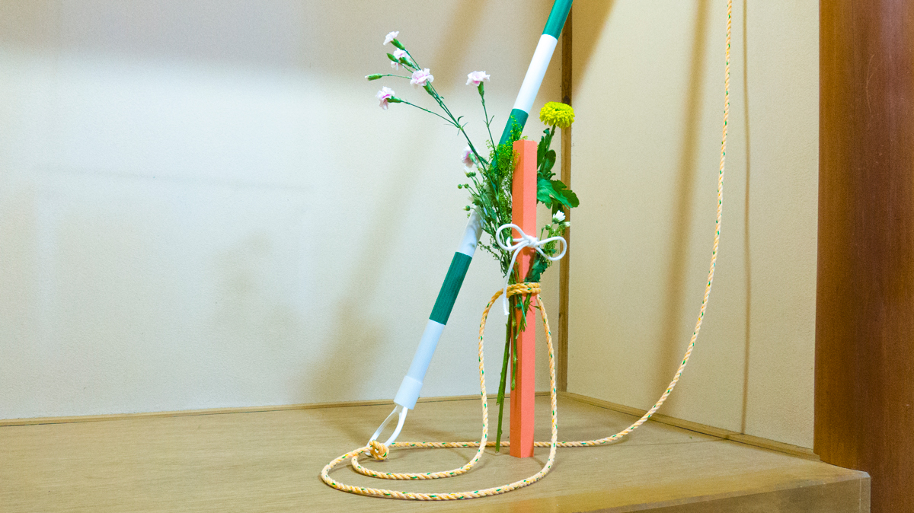
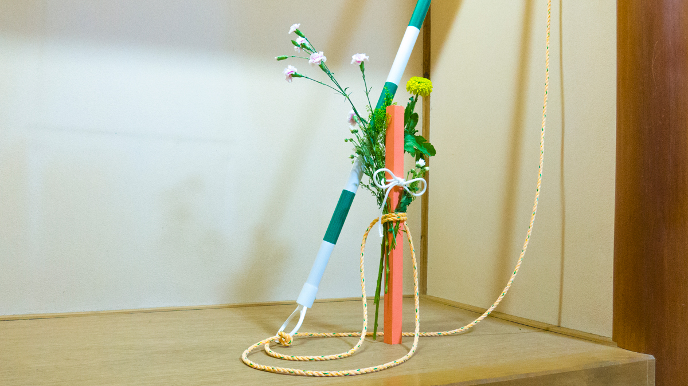

Countryside Station Ikebana
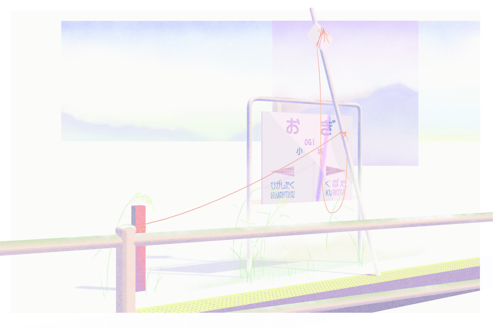Ogi Station Postcard

 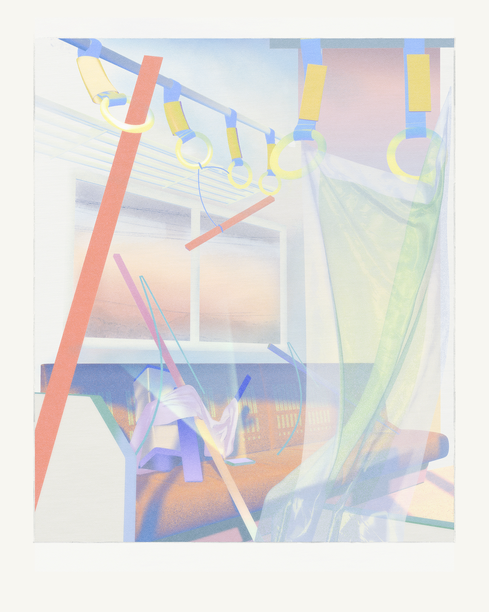
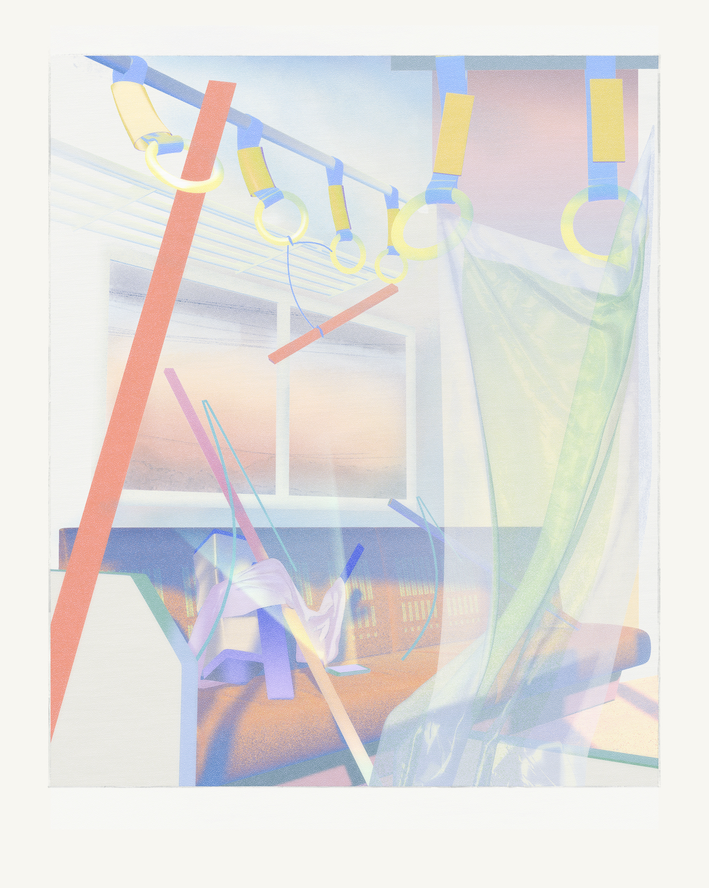
Traffic Divider Exterior / Kintetsu Nara Line Train Interior
Illustration, 3-color risographs
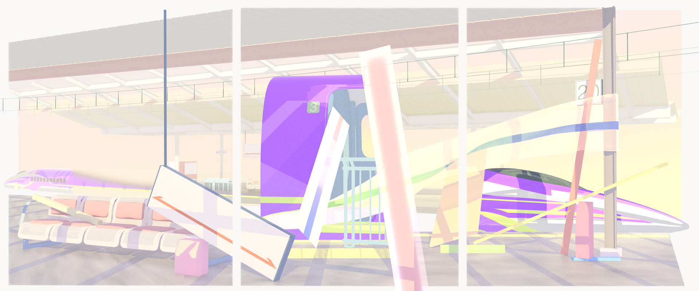EVA 500 Shinkansen at Shin-Osaka
3-panel illustration

Objects in Snow
3D composition

Hiraoka Station, East Underpass Entrance
 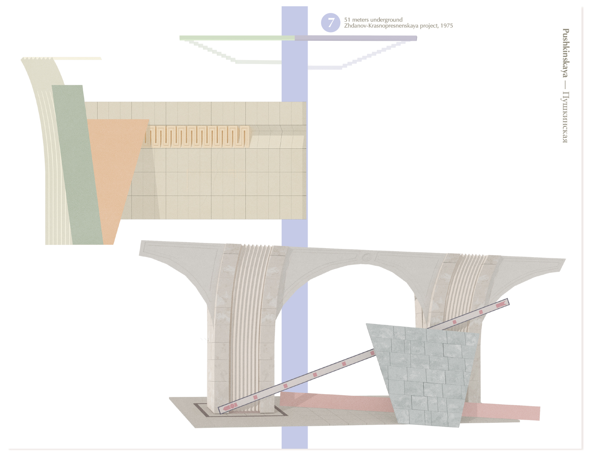
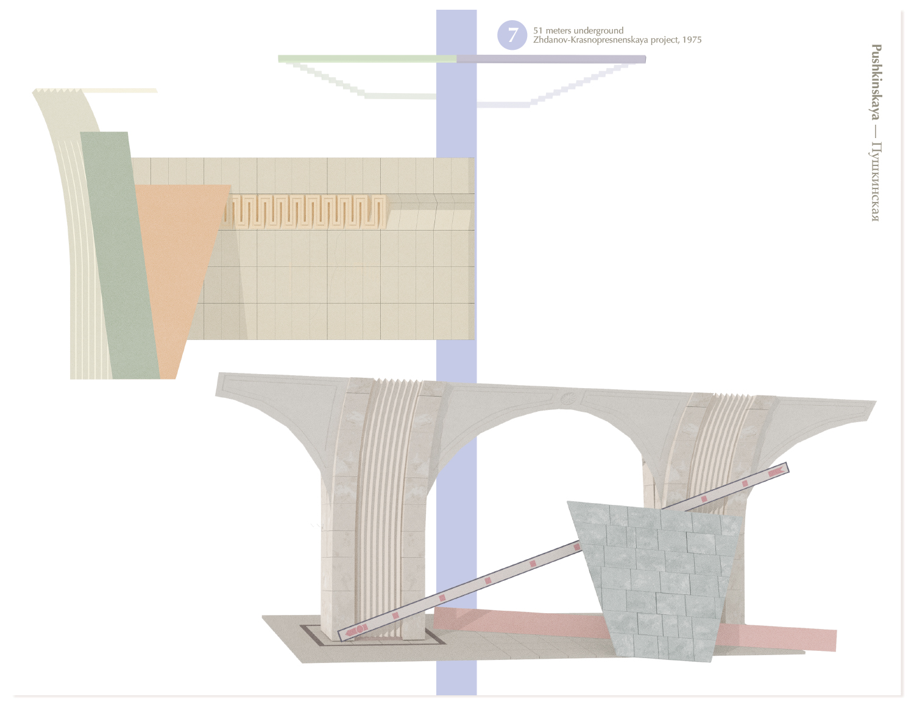
Transfer Point II
zine illustration, layout
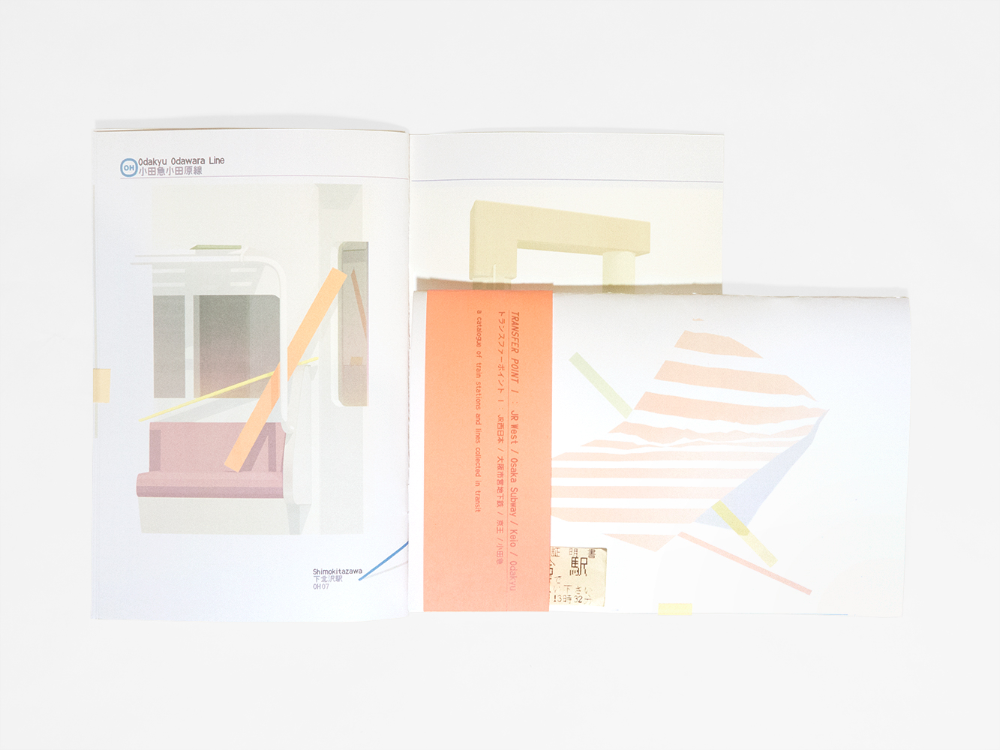Transfer Point I
zine illustration, layout

Artmossphere, guest curated by Mónica Campana
Exhibition Installation at Manege in Moscow, Russia

Moscow Metro, Object 1: Station Entrace

Moscow Metro, Object 2: Station Platform

Moscow Metro, Object 3: Train Car

Moscow Metro: Station Exterior

Moscow Metro: Station Interior
Hiraoka Station, East Underpass Entrance

JR Osaka Loop Line at Temma Station / 天満駅の入口
gouache, graphite on paper — 18.5in.x30in.

Objects Through Window
gouache on paper — 24in.x21in.

Metro Study in Oblique Perspective
gouache on paper — 26in.x40in.

Objects On Stairwell
gouache on paper — 40in.x26in.
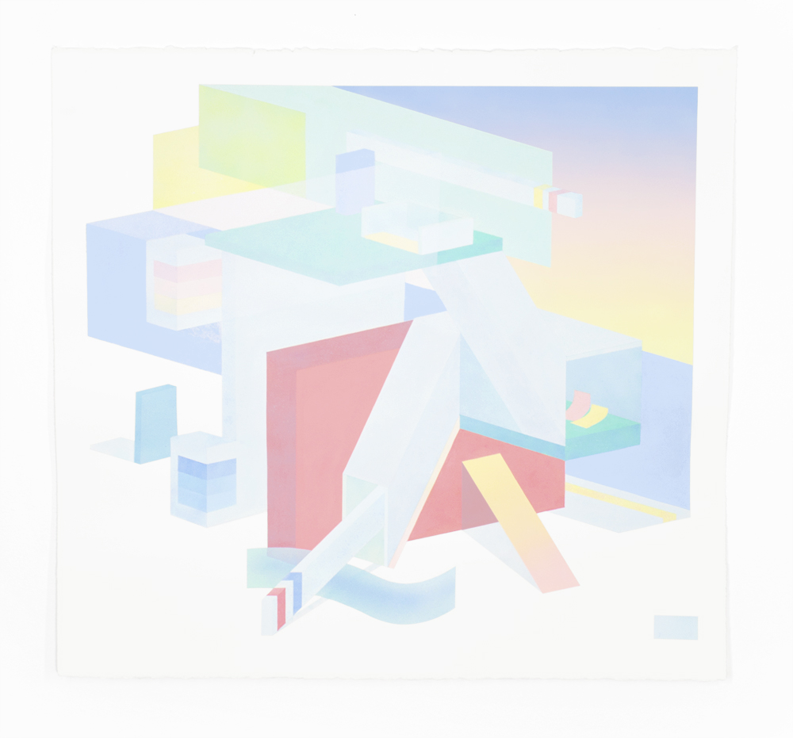
Tokyo Metro Study 1 :: Sangenjaya-eki Entrance
acrylic & gouache on paper ;; 26in.x28in.

Tokyo Metro Study 2 :: Platform Navigation & Support
acrylic & gouache on paper ;; 26in.x28in.

Tokyo Metro Study 3 :: Yamanote-sen at Ikebukuro-eki Platform Study
acrylic & gouache on paper ;; 22in.x40in.

Tokyo Metro Study 4 :: Ikebukuro-eki Entrance Study
acrylic & gouache on paper ;; 22in.x40in.

渋[谷]駅 :: Shibuya-eki 1
gouache on paper — 40in.x26in.

渋谷[駅] :: Shibuya-eki 2
gouache on paper — 40in.x26in.

[渋]谷駅 :: Shibuya-eki 3
gouache on paper — 40in.x26in.

新[宿]駅 :: Shinjuku-eki 1
gouache on paper — 40in.x26in.

新宿[駅] :: Shinjuku-eki 2
gouache on paper — 40in.x26in.

[新]宿駅 :: Shinjuku-eki 3
gouache on paper — 40in.x26in.

casted shadow study 002
gouache on paper — 34in.x25in.

casted shadow study 003
gouache on paper — 34in.x25in.
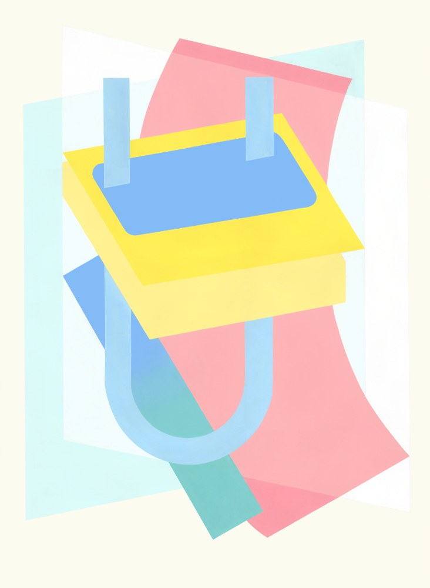

[U]-Bahn & U-[3]
gouache on paper — 34in.x25in. each

bus composition: up hill
monotype: oil on paper — 30in.x22in.
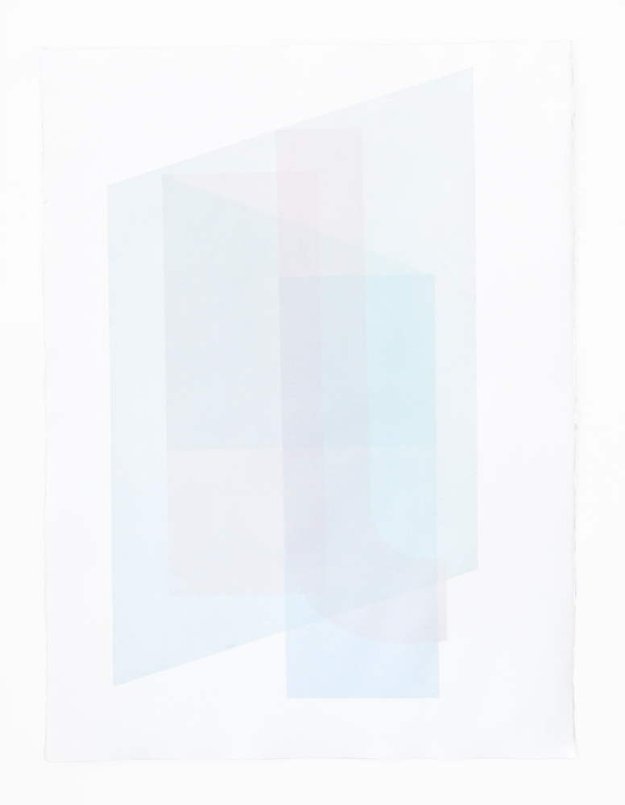bus composition: en route
monotype: oil on paper — 30in.x22in.